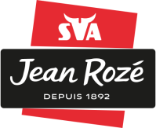

Parcours Professionnel

Technicien Réseaux & Systèmes
SVA Jean Rozé – Vitré | 2023-2025
Supervision réseau +1400 collaborateurs, VLANs, routage inter-VLAN, STP, Active Directory, support, sauvegardes.
Bac Pro Systèmes Numériques – ARED
Lycée Pro – Rennes | 2021-2024
Électronique, réseaux, audiovisuel. Obtention avec mention.